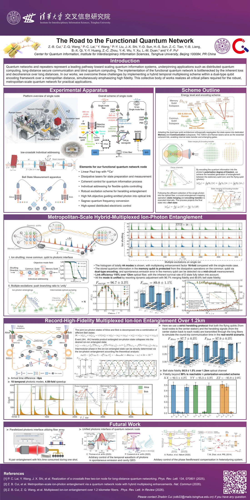

Language models at scale
MiniMax · Pretraining algorithms, data research and engineering.
I study how data, representations and architecture shape reasoning and generalization through controlled experiments. I build the training software, research tools and physical instruments those experiments require.


My current work connects pretraining, visual representations and the systems needed to run experiments. World models and generalist robotics are directions I am actively studying, grounded in a background in quantum information and experimental physics.
Research questions & experimental approach ↗MiniMax · Pretraining algorithms, data research and engineering.
MiniTrainSys · Model interpretability, knowledge, reasoning and architecture.
From multimodal features to small models.
Research workflows that cross model boundaries.
Research direction: prediction, action and generalization.
From optical hardware to quantum operations.
At MiniMax, I work on pretraining algorithms, data research and data engineering within the team’s large-scale training stack. I study how data composition and sequence construction shape learning dynamics and model capability, implement controlled comparisons, and contribute to shared data pipelines. Scaling-law analysis and capability evaluation help determine which findings justify a larger training run.
Open a project for methods, experiments, original figures and a precise account of my contribution.

Built a dense and sparse-MoE training framework to study knowledge storage and extraction through controlled data, probes and interventions. Completed factual-readout experiments; ongoing work examines reasoning, error recovery and structural generalization.

Combined cross-attention and spatially aware representations with dataset construction and distillation, taking gaze estimation from model design to deployable inference.

Developed an agent harness with context handoff, collaborative execution and custom tools, integrating code, files, experiments and mobile access into one workspace.
Optics, vacuum, electronics, software and quantum-state control—connected through working experimental systems.

Built instrument-control hardware and software across PCBs, firmware, drivers and APIs; integrated optics, vacuum and calibration, and contributed to Bell Ctrl real-time feed-forward.

Led core experiments in trapped-ion quantum networking, connecting photon collection, fiber coupling, synchronized control and quantum-state characterization.

A collection of work on remote entanglement, logical-state protection and programmable photonic storage—connecting physical mechanisms to apparatus and measured results.
Research experience, projects and background.

A visual introduction to the quantum-network experiments.
Different emphases, the same research foundation.
 ZHAIBIN CUI
ZHAIBIN CUII study how language models acquire knowledge from data, and how architecture and training scale affect representations and reasoning. I contribute to large-scale pretraining at MiniMax, built MiniTrainSys from scratch for controlled studies with synthetic data, and contribute to spatially aware visual modeling and distillation in PaGE. My training in experimental physics informs how I isolate variables, investigate unexpected results, and test explanations. I build the tools needed to run experiments quickly and record the conditions under which a result holds.
Pretraining research · Internship
Ph.D. candidate · Model training and mechanisms, visual learning, and quantum information
B.Sc. in Physics · Many-body physics, condensed matter & AI+X · Outstanding Graduate
First Prize · Third Prize
Tsinghua UniversityUniversity-level Second Prize · Institute-level First Prize
Tsinghua UniversityOpen to research roles and collaborations in foundation models, multimodal learning, world models, and pretraining. I bring controlled algorithm research, large-scale training experience, and the ability to build across software and physical systems.